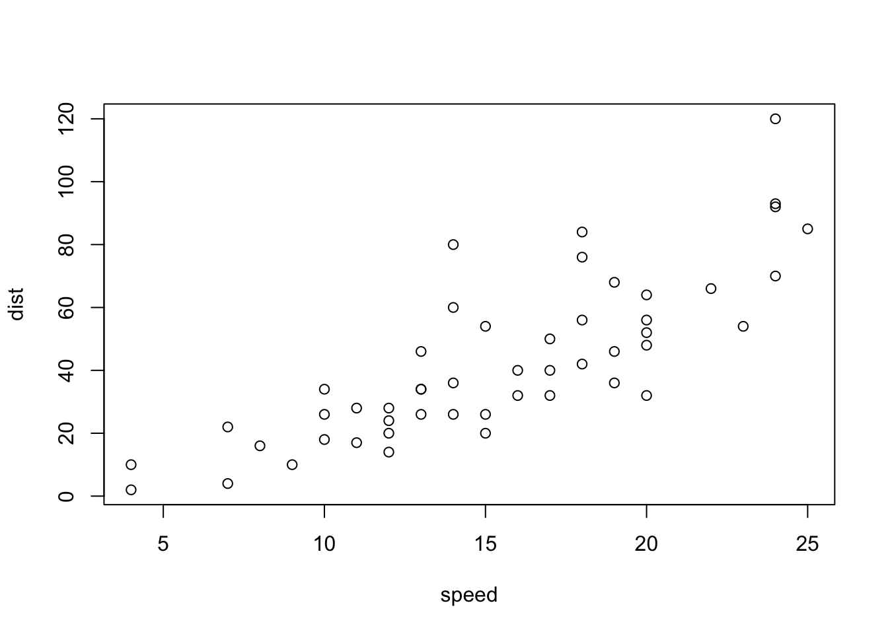
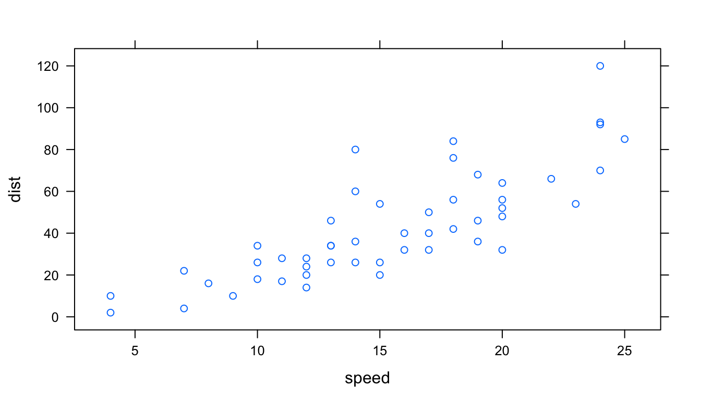

Chapter 2 Alternatives: R base graphis and lattice graphs
Learning Objectives
- Make a plot with base plot package
- Make a plot with other base plot commands
- Make a simple plot with R lattice package
- Explain the difference to the ggplot approach and evaluate pros and cons
2.1 R base graphics
We will use a simple dataset that comes with the base R install.
head(cars)#> speed dist
#> 1 4 2
#> 2 4 10
#> 3 7 4
#> 4 7 22
#> 5 8 16
#> 6 9 10R base comes with a simple plot command that can be applied to the data like that:
plot(cars)
Other things one can do with plot.
Walk through plot arguments and options.
How to do multiple plots.
https://www.stat.auckland.ac.nz/~paul/RGraphics/chapter1.pdf and code: https://www.stat.auckland.ac.nz/~paul/RGraphics/chapter1.html
Challenge: make a plot
Challenge: how would you do this with ggplot?
Other base package plot commands: histogram, boxplot, stripchart, barplot, mosaicplot, dotchart and more.
http://www.cyclismo.org/tutorial/R/plotting.html and http://www.cyclismo.org/tutorial/R/intermediatePlotting.html
https://www.harding.edu/fmccown/r/
http://courses.atlas.illinois.edu/spring2017/STAT/STAT200/RProgramming/Plotting.html
Challenge: use some of these commands
2.2 lattice package
Lattice is another major graphic package in R. [… more about it here…] It works like this:
xyplot(dist ~ speed, cars)
Iris data example (again, other data??) :
head(iris)#> Sepal.Length Sepal.Width Petal.Length Petal.Width Species
#> 1 5.1 3.5 1.4 0.2 setosa
#> 2 4.9 3.0 1.4 0.2 setosa
#> 3 4.7 3.2 1.3 0.2 setosa
#> 4 4.6 3.1 1.5 0.2 setosa
#> 5 5.0 3.6 1.4 0.2 setosa
#> 6 5.4 3.9 1.7 0.4 setosaContains 50 samples from 3 species with 4 measurements: length and width of petals and length and width of sepals.

Figure 2.1: Iris Petal and Sepal (Source: kaggle.com)
With lattice
xyplot(Petal.Length~Petal.Width, data = iris, groups=Species,
panel = panel.superpose, type = c("p", "smooth"), span=.75,
col.line = trellis.par.get("strip.background")$col,
col.symbol = trellis.par.get("strip.shingle")$col,
key = list(title="Iris Data", x=.15, y=.85, corner=c(0,1), border=TRUE,
points = list(col=trellis.par.get("strip.shingle")$col[1:3],
pch = trellis.par.get("superpose.symbol")$pch[1:3],
cex = trellis.par.get("superpose.symbol")$cex[1:3]),
text = list(levels(iris$Species))))
The same with ggplot:
ggplot(data=iris, aes(x=Petal.Width, y=Petal.Length, color=Species)) +
geom_point() +
stat_smooth(aes(jitter(Petal.Width), jitter(Petal.Length)), size=.2, se=F) +
theme_classic()
pros - cons?
More about lattice:
https://www.stat.auckland.ac.nz/~paul/RGraphics/chapter4.pdf R code: https://www.stat.auckland.ac.nz/~paul/RGraphics/chapter4.html